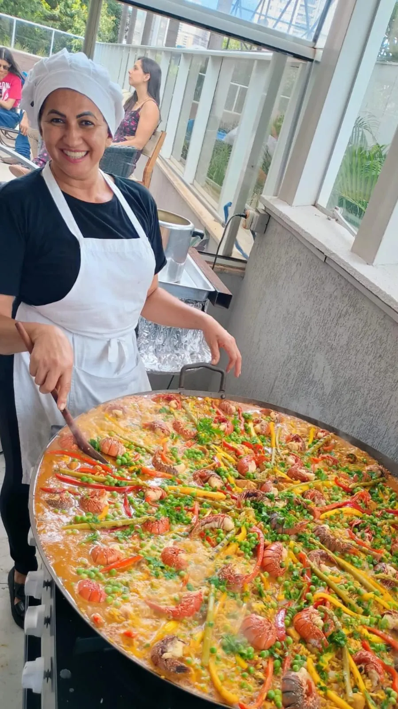
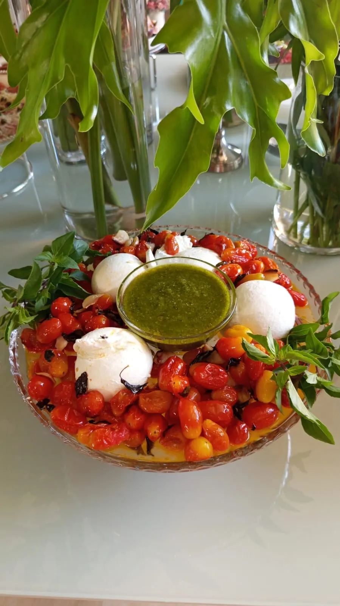
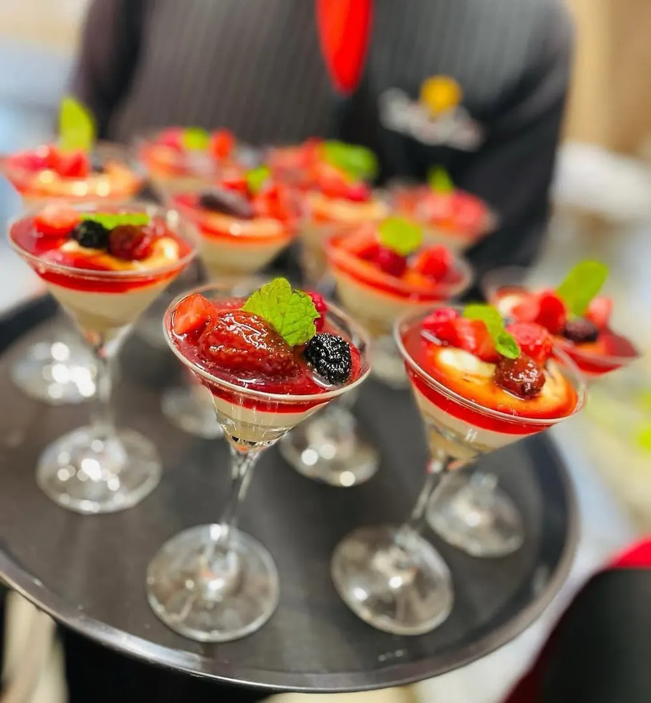
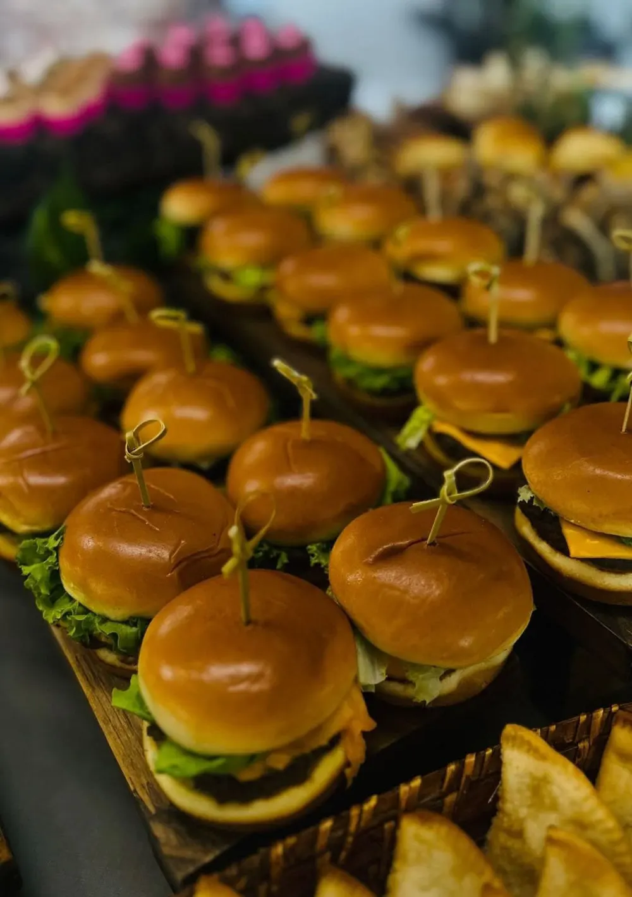
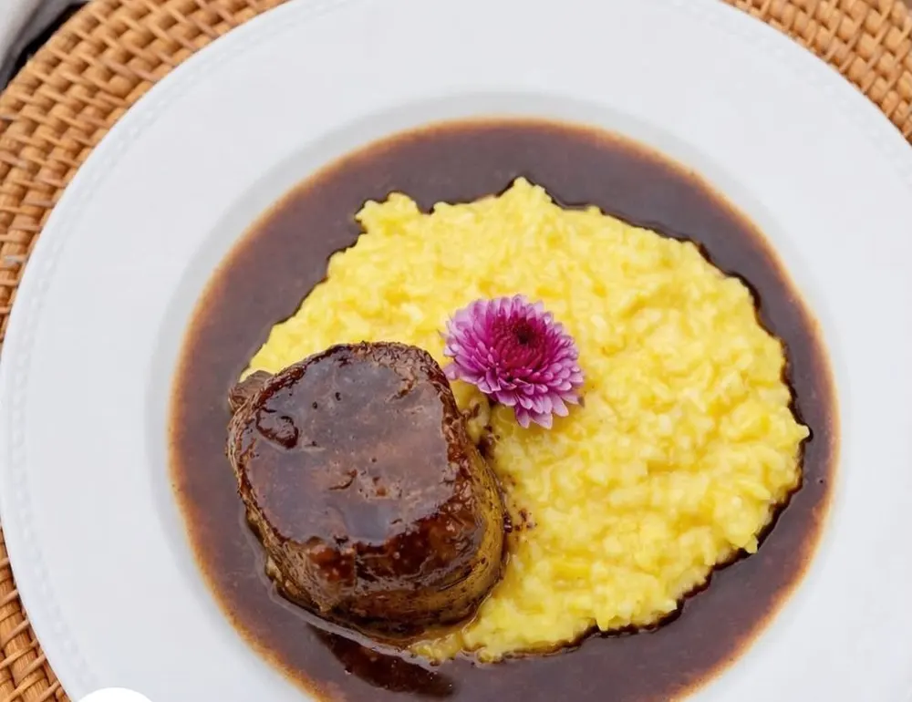
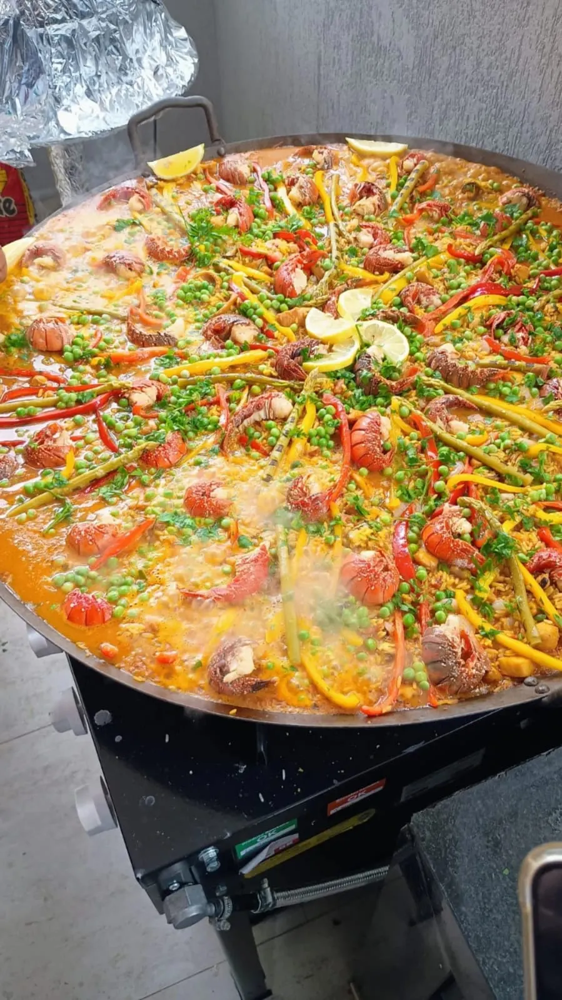
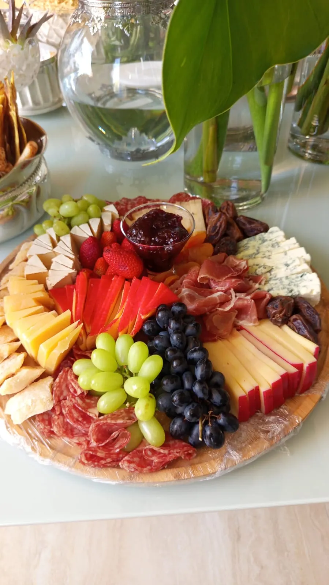
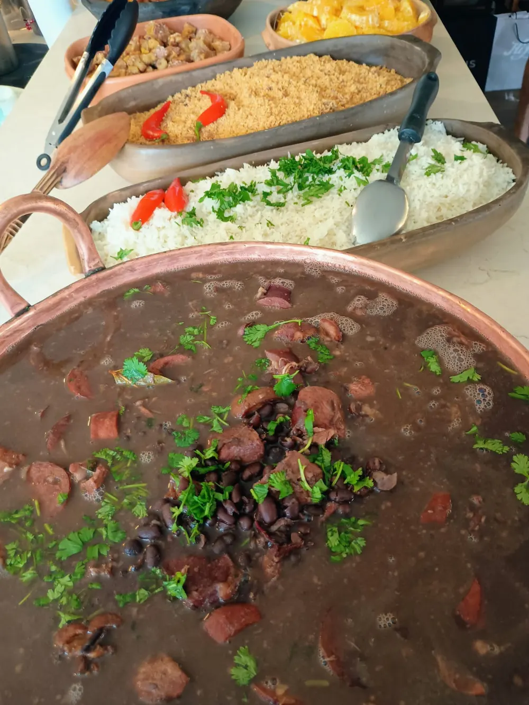

Veri, a cozinha que transforma encontros em memórias
A Veri Personal Chef nasceu de uma paixão simples: reunir pessoas ao redor de uma mesa bonita e de comida de verdade. Cada evento é pensado nos mínimos detalhes — do primeiro canapé à última colherada da sobremesa.
Na cozinha da Veri, clássicos da gastronomia — risotos cremosos, carpaccio, ceviches, paella e filé mignon aos molhos da casa — encontram o sabor afetivo do Cerrado, com galinhada com pequi, Panelinha do Cerrado, Chica Doida e escondidinhos de carne-seca.
Mais do que servir, a Veri cuida: monta o cardápio junto com você, respeita o estilo da sua festa e entrega uma apresentação que encanta antes mesmo da primeira mordida.
Cardápio sob medida
Montado a partir das suas preferências e do perfil dos convidados.Feito com carinho
Preparos caseiros, ingredientes selecionados e muito cuidado.Apresentação impecável
Mesas e travessas montadas para encantar os olhos.Do íntimo ao grande evento
Jantares a dois, festas em família e celebrações com muitos convidados.Eventos que a Veri transforma em sabor
Seja qual for a ocasião, o cardápio é desenhado para combinar com a sua festa, o seu horário e os seus convidados.

O sabor do dia mais especial
Da recepção com mesa de frios e ceviches servidos em taças ao jantar com filé mignon, risotos e sobremesas finas. Um buffet elegante, montado com o mesmo capricho da decoração — para que os noivos só precisem se preocupar em celebrar.
- Recepção & finger food
- Jantar
- Mesa de frios
- Sobremesas finas

Festas de 15 anos
Um cardápio sofisticado e jovem ao mesmo tempo: finger foods em copinhos, mini-hambúrgueres, massas e sobremesas em taças que viram foto.
- Finger food
- Massas e risotos
- Doces em taça

Aniversários infantis
Comida gostosa para as crianças e que agrada os adultos também: mini-hambúrgueres, mini sanduíches naturais, palitinhos de legumes e frutas no copinho.
- Mini-hambúrguer
- Lanchinhos saudáveis
- Opções para os pais

Jantares & personal chef
A experiência de um restaurante dentro da sua casa. Jantares românticos, aniversários de casamento e encontros especiais com pratos empratados.
- Jantar a dois
- Em família
- Na sua casa

Eventos corporativos
Coquetéis, almoços e confraternizações de empresa com um cardápio que causa boa impressão.
- Coquetel
- Almoço executivo
- Fim de ano

Mesas de frios & grazing
Tábuas fartas de queijos, embutidos, frutas, patês e bruschettas — o centro das atenções em qualquer recepção, chá ou happy hour.
- Tábuas de queijos
- Patês artesanais
- Bruschettas

Confraternizações em família
Feijoada completa, paella, galinhada com pequi e costelinha ao barbecue: pratos fartos para almoços de domingo, batizados e festas em casa.
- Feijoada
- Paella
- Comida goiana
Do primeiro contato ao último prato
Conversa inicial
Você conta pelo WhatsApp a data, o tipo de evento e o número de convidados.
Monte seu cardápio
Escolha entre entradas, pratos principais, acompanhamentos e sobremesas — com a orientação da Veri.
Orçamento personalizado
Você recebe uma proposta feita sob medida para a sua festa, sem pacotes engessados.
O grande dia
A Veri prepara, monta e apresenta tudo com capricho. Você só aproveita.
Um pouco do que sai da cozinha
Pratos, mesas e eventos preparados pela Veri.
Bastidores, pratos e eventos da Veri
Acompanhe as novidades, veja os eventos mais recentes e se inspire para a sua festa em @veripersonalchef.
Vamos criar juntos o cardápio do seu evento?
Conte para a Veri o que você está planejando. Ela responde pessoalmente e monta uma proposta sob medida.
Chamar no WhatsApp Siga no Instagram (62) 98593-3737